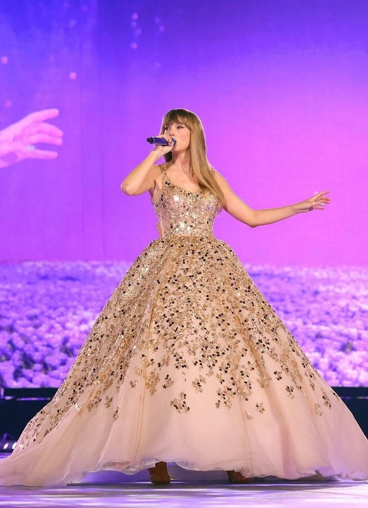

ARE YOU READY FOR IT?

Taylor Swift performing enchanted in her Era's Tour 2023.
Taylor Swift (born December 13, 1989) is an American singer-songwriter recognized for her songwriting, musical versality, artistic reinventions and conquering world with her massive fan-base with her amazing songs and tours in the 21st century.
Through her ongoing efforts to re-record her albums, Taylor Swift aims to reclaim ownership and artistic control over her musical legacy adding the title of Taylor's version.
- Napster live (2006)
- Fearless (2008)
- Speak Now (2010)
- Red (2012)
- 1989 (2014)
- Reputation (2017)
- Lover (2019)
- Folklore (2020)
- Evermore (2020)
- Fearless- Taylor's version (2021)
- Red- Taylor's version (2021)
- Midnights (2022)
- Speak Now- Taylor's version (2023)
DISCOGRAPHY
- Fearless Tour (2009-10)
- Speak Now World Tour (2011-12)
- The Red Tour (2013-14)
- The 1989 World Tour (2015)
- Reputation Stadium Tour (2018)
- The Era's Tour (2023-present)
TOURS
"Never Believe Anyone Who Says You Don't Deserve What You Want"
~Taylor Swift